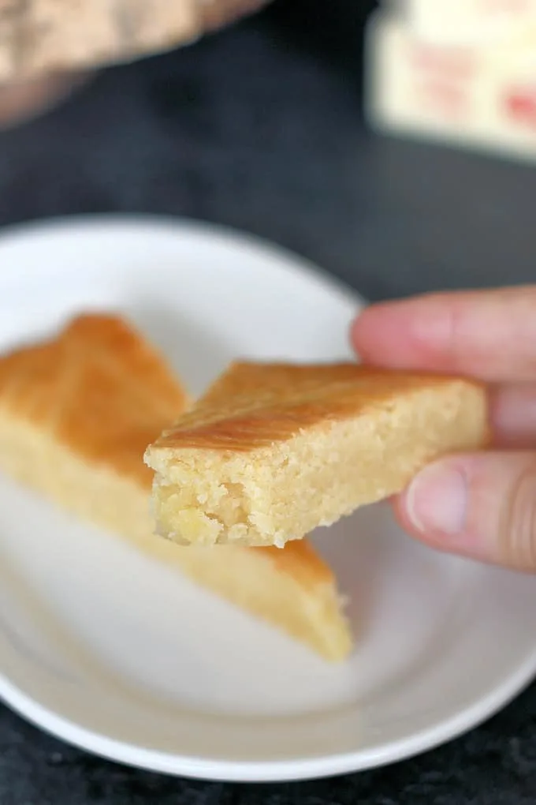

Buttercake - the version that I grew up with - is a dense, moist, cookie-like tart with no filling. It's flavored with almond extract, and my family received the recipe from a very dear friend. Great-Aunt Ruth was German, and so I know this as a German recipe, even though the versions I was able to find online that looked familiar are apparently Dutch. Here's how it's made.